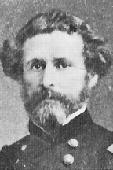

|

|

|
|
|
Soldier, politician, and explorer John Charles Frémont was the first presidential
candidate of the Republican Party and served as a major general in the American Civil War.
He is best remembered for his explorations of the American West, which earned him the
nickname "The Great Pathfinder."
Frémont was born in Savannah, Georgia to French immigrant Jean Fremon and Anne
Beverly Whiting, who were unmarried. The young Fremon's father died when he was five, and
he lived thereafter in Charleston, South Carolina. In 1829, having changed his name to
Frémont, he enrolled at Charleston College, but was expelled for "incorrigible
negligence" before his graduation. Shortly after leaving college, Frémont accepted a
commission in the U.S. Navy, where he taught math, and then he moved on to the U.S. Army,
where he was made a lieutenant. In 1836, he joined an expedition assigned to survey
Cherokee lands in North Carolina, Tennessee and Georgia. Frémont took an immediate
liking to the life of an explorer, and on that expedition he realized that, "The
occupation of my prime of life was to be among Indians and in waste places."
Frémont served with distinction on the 1836 expedition, which brought his name to
the attention of famed French geographer Joseph Nicollet. Nicollet arranged for the young
man to be assigned as a surveyor for his exploration of the territory between the
Mississippi and Missouri Rivers. On this expedition, Nicollet did much to educate
Frémont in the natural sciences, particularly as they applied to the American West.
At the close of the trip, in 1841, Frémont and Nicollet relocated to Washington, D.C.
to prepare a report on their findings for President Martin Van Buren.
While in the nation's capital, Frémont met Missouri Senator Thomas Hart Benton.
Benton was a prominent advocate of Manifest Destiny--the idea that America's borders
should stretch from the Atlantic to the Pacific Ocean--and so he and Frémont quickly
struck up a warm friendship. The 27-year-old Frémont also became friendly with the
Senator's 16-year-old daughter Jessie, and they began to speak of marriage. Benton refused
to give his blessing to the union--perhaps because of questions surrounding Frémont's
parentage, or because of Jessie's youth--and he arranged to have Frémont sent on a
mapping expedition in the Iowa territory. Frémont completed the work, and then eloped
with Jessie. Despite this act of defiance, Benton resigned himself to the union, and did
what he could to help his new son-in-law's career. He persuaded Congress to appropriate
funds for surveys of the Oregon Trail in 1842 and Oregon Territory in 1843, and to assign
Frémont to lead each of the expeditions.
Frémont's first survey, of the Oregon Trail, was an enormous undertaking. He was
responsible for acquiring all the necessary equipment and supplies, and for managing a
21-man crew. While preparing for the expedition, he met and hired Kit Carson, who became
Frémont's most trusted associate. The explorers set out from St. Louis in June of
1841, traveling approximately 24 miles a day, with Frémont making extensive notes on
topography and vegetation along the way. They arrived at South Pass, Wyoming in August and
were back in St. Louis by October of 1842.
Frémont and Carson led another major expedition in 1843, traveling west from
Missouri into modern-day Utah, Nevada, and California. On this trip, Frémont and his
party covered nearly 6,500 miles, and became the first Americans to encounter Lake Tahoe,
Mount St. Helens, and other landmarks. On his return home, Frémont and his wife
published A Report of the Exploring Expedition to the Rocky Mountains, Oregon and
California (1845). Thanks to Jessie's skill as a writer, the volume was an enormous
success. It earned Frémont a promotion to captain, and made him--and Carson, and
Jessie--quite famous.
The success of Frémont's first two expeditions led President James K. Polk to
appoint him to lead a third, this one a two-year exploration of the Great Basin and Sierra
Mountains. Eager to get underway, Frémont, Carson, and a party of 55 men left St.
Louis on June 1, 1845. Their initial destination was the Arkansas River, whose source they
were supposed to map. However, upon reaching the Arkansas, Frémont quickly changed
course, and headed to California. This led to a long series of disasters and
confrontations. Upon his arrival in California, Frémont tried to persuade American
settlers there to revolt against the Mexican Government. This angered Mexican general
José Castro, and Frémont and his men were forced to flee to Oregon lest they
should be attacked and annihilated. While in Oregon, Frémont and his men were
attacked by a group of Modoc Indians; they responded by destroying a village belonging to
the Klamath tribe. Frémont's party slaughtered many women and children in this
assault, and then lost several men when Klamath braves counterattacked. In June of 1846,
Frémont and his men returned to California, where they helped encourage the Bear Flag
Revolt, in which Americans in California declared themselves to be independent. During the
revolt, Frémont captured three Mexicans, and had them executed without cause. The
dead men proved to be well-connected and widely admired, and their deaths did much to
damage Frémont's reputation and his career.
When war was declared between the United States and Mexico, Frémont and his men
did much to help secure the state of California for the United States. Working with
Commodore Robert Stockton, he captured the cities of Santa Barbara and Los Angeles, and
also defeated Mexican general Pio Pico. After his surrender, Pico signed the Treaty of
Cahuenga, which ended the fighting in California.
The surrender of California set off a power struggle between Stockton (the
highest-ranking navy officer in the area) and General Stephen Watts Kearney (the
highest-ranking army officer in the area). Frémont sided with Commodore Stockton, who
rewarded Frémont's loyalty by appointing him as governor of California. This outraged
Kearney, who felt the appointment of a new governor was his privilege. Given that
Frémont was an army officer, and thus responsible to Kearney and not Stockton,
Kearney was able to charge him with mutiny. Frémont was detained and put on trial at
Fort Leavenworth in Kansas, where he was found guilty. President Polk, recognizing
Frémont's invaluable service and enormous popularity--and perhaps responding to
pressure from Senator Benton--quickly issued a pardon. Frémont accepted the pardon,
but nonetheless resigned his commission and relocated to California with his wife.
In 1848, Frémont led his final exploration, surveying a railroad route through the
southern Rocky Mountains on behalf of his father-in-law and several businessmen in St.
Louis. The privately-funded expedition was a disaster--Frémont and his party got lost
in the Rocky Mountains, and 10 of the party's 30 members died. Some of the survivors
blamed Frémont for the deaths, and he was widely criticized in the press. His career
as The Great Pathfinder was at an end.
Despite the disasters that had befallen Frémont, he still remained well-connected
in his adopted home state, and in 1850 he was chosen to represent California in the U.S.
Senate. A Democrat, like his father-in-law, he served for only a year before resigning.
Five years later, in 1856, the newly-formed Republican Party chose him as their first
presidential candidate. Though inexperienced in politics, Frémont had many qualities
that appealed to the young party: He was a Southerner by birth, he was strongly opposed to
slavery, and he was popular and dynamic. His wife Jessie was also an asset, so much so
that one Republican slogan was "Frémont and Jessie, too!" The Republican platform
focused on admitting Kansas as a free state, an issue the party emphasized with such
rallying cries as "Free Soil, Free Labor, Free Speech, Free Men and Frémont" and "Let
Freedom Conquer!" For the first time in his career, Frémont did not enjoy the support
of Senator Benton, who felt that his son-in-law had betrayed the Democratic Party.
On Election Day, November 4, Frémont was soundly defeated. He tallied 50 fewer
electoral votes and 500,000 fewer popular votes than the victor, Democrat James Buchanan.
The loss came with a silver lining for the Republicans, however. Frémont did not
appear on the ballot in most Southern states, but in the North he polled nearly 60 percent
of the vote. Those Northern states that he did lose, he lost narrowly. The lesson for the
Republicans, then, was that if they could find the right candidate in 1860, they had a
chance to capture the entire North, and with it the presidency.
Following his loss, Frémont returned to California, where he lived quietly for
four years. When the Civil War broke out in 1861, President Abraham Lincoln appointed
Frémont as a major general and placed him in command of the Department of the West.
His orders were simple--he was to contain Confederate forces between the Mississippi River
and the Rocky Mountains. However, as was his habit, Frémont quickly overstepped his
bounds. He evicted the legally-elected governor of Missouri and installed a pro-Union man
in his place. Frémont then declared martial law and emancipated all slaves in the
state. Lincoln could not afford such provocative action, as Missouri was dangerously close
to seceding, so he rescinded Frémont's emancipation order and relieved the general of
command. After brief service in Virginia in 1862, Frémont went to New York to wait
for another command, but that command never came. Dissident Republicans briefly courted
Frémont as a possible replacement for Lincoln in 1864, but he withdrew his name from
contention.
After the Civil War, Frémont's star continued to fade. He served briefly as a
railroad executive, and as governor of the Arizona territory, but was not successful in
either role. The victim of serious financial reverses, Frémont was supported in his
final years by Jessie, who earned money writing romantic books and articles about the
West. In July of 1890, Frémont died of peritonitis in New York City. Jessie survived
him by 12 years, passing away in 1902.
Though unsuccessful in his careers as a general, politician, and businessman, John C.
Frémont in nonetheless one of the key figures in California history, and must be
given credit for his work in charting much of the American West. The number of plants he
discovered, and that still bear his name, are testament to his legacy.
Source: Christopher Bates, ed. The Encyclopedia of the Early
Republic and Antebellum America (Armonk, NY: M.E. Sharpe, 2010), 392-395.
|